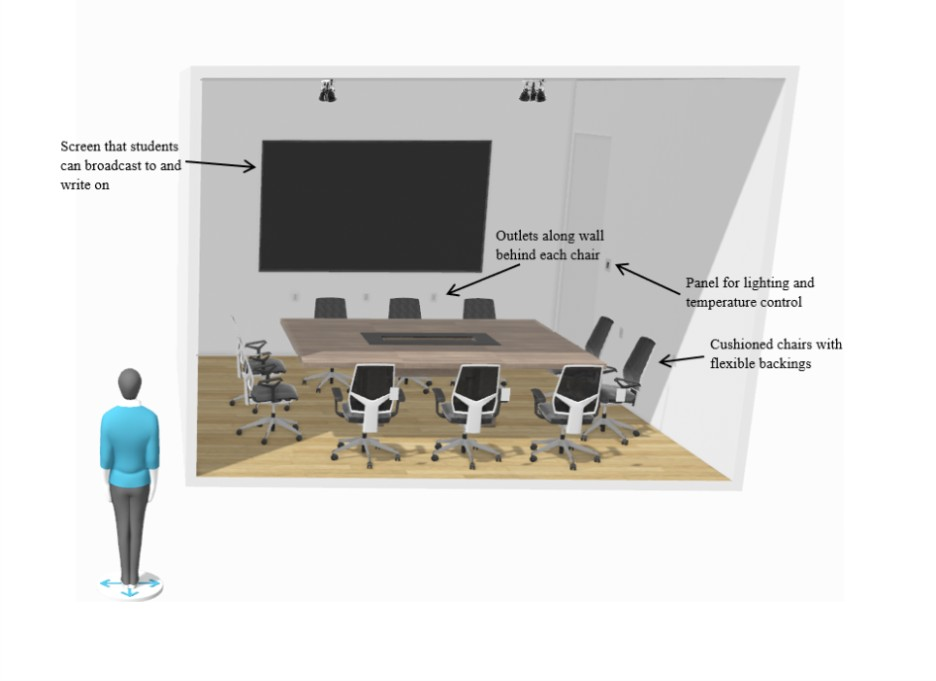
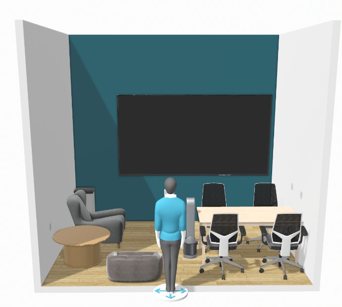
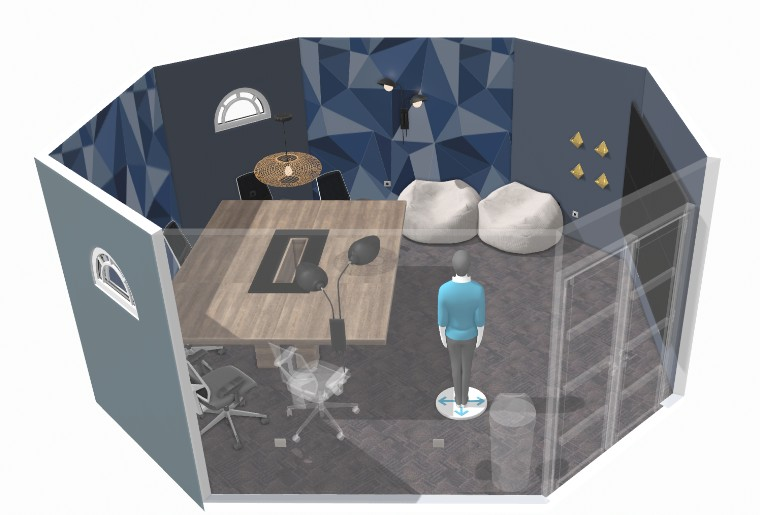
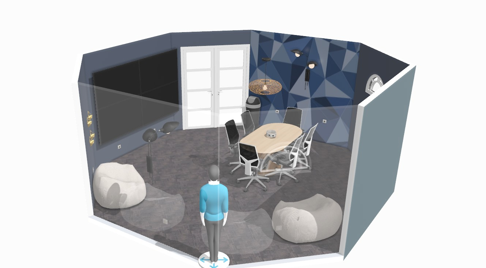

Long-duration group study space
Modular Study Pod
A digitally prototyped campus study room that makes long collaborative sessions more comfortable, private and functional for engineering students.

Problem and constraints
We did not assume our complaints were universal
We started with a broad prompt to improve students' out-of-classroom study experience and narrowed it to group study spaces for engineering teams working for long stretches. The project did not require physical construction, so the constraints were accessibility, realistic campus use, and whether students would actually find the space useful.
- ObserveEach of us watched a different study location for at least 30 minutes: Pattee and Paterno, the ECORE entrance, the West Lounge and the Leonhard library. Students preferred not to face each other, groups sat on one side and individuals on the other, and too many people walked past.
- Mock-test the questionsMock interviews with classmates exposed redundant and unclear questions, so we revised and reordered them before the main round.
- InterviewEach of us ran three interviews with students from different majors, revised the questions again, then ran two more. Later rounds used 3D models so students could react to a room that did not yet exist.
Decisions
Four concepts, one rejected
We rejected the egg-chair partly on cost but kept its underlying goal, comfort, through more conventional seating. We combined the cube and hut into a group room.
Iteration
The room got less formal and more comfortable




design iterations in HomeByMe
display students preferred over a wall-sized smart board
person rooms preferred over a larger conference-style room
What students said about the final design
“I like that the entire room is rounded rather than the typical cube, it adds a cozier feel.”
“I would not put the outlets along the walls, rather, put it in the center of the table so that people do not trip or have to worry about cords not reaching the wall.”
“I like the bean bag chairs; they are a good distance from the table and the screen.”
Strengths
Weaknesses
Outcome and limits
A validated digital concept
The result stayed a digital concept rather than an implemented campus space, so we could not test acoustics, circulation, ergonomics or long-duration use.
What I'd do next time
Build a temporary full-scale teardown mockup, more like a model home than a polished room, so users could physically inhabit the layout and expose problems a screen-based walkthrough cannot.